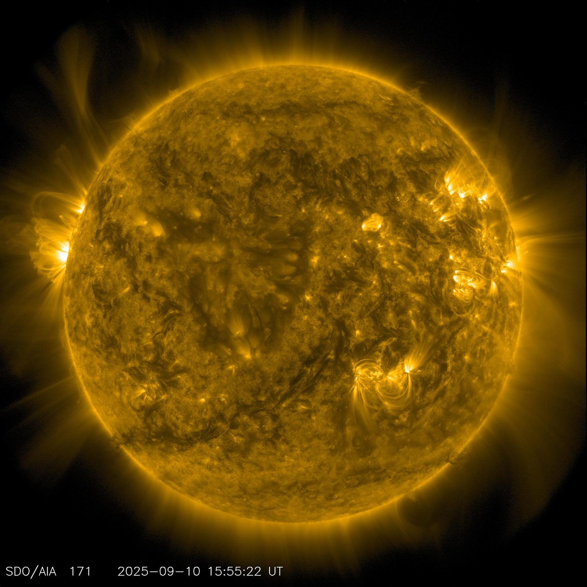
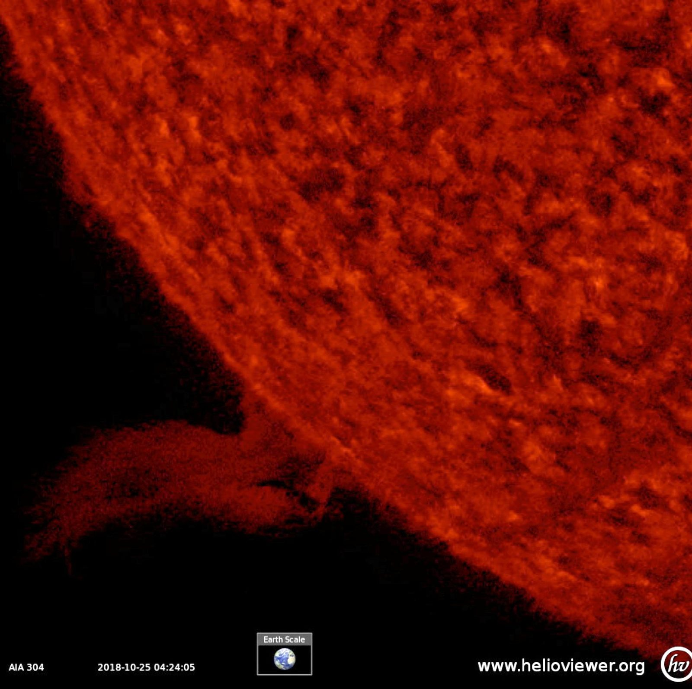
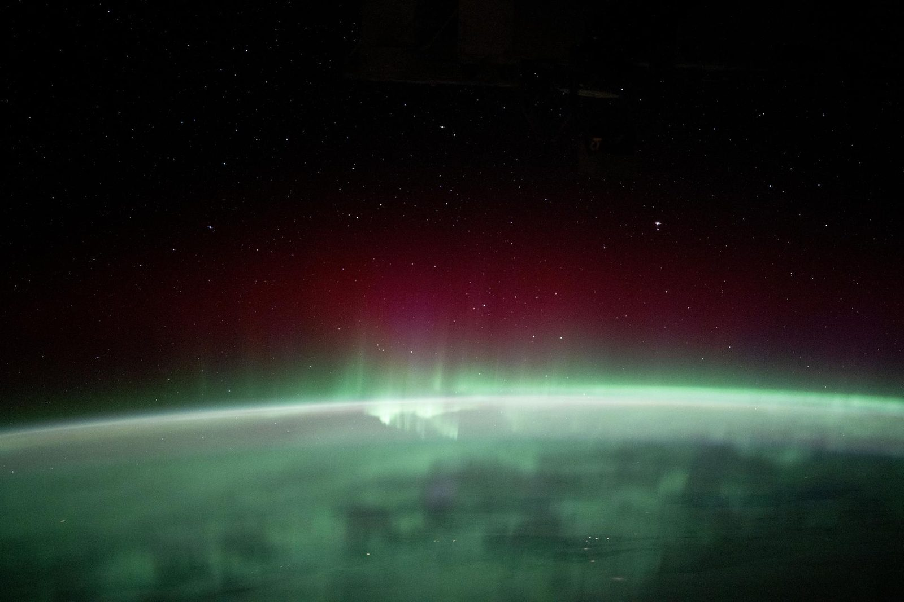

We model the radiation environment crews fly through.
From the surface of the Sun to the cabin of a spacecraft, SSAI turns the physics of the Sun-Earth system into exposure risk a flight surgeon can act on. We apply nearly fifty years of heliophysics and space-weather heritage to crew radiation for Artemis and deep space, to radiation at aviation altitude, and to environmental risk forecasting for the missions that cannot fail.
Where heliophysics meets human health.
Radiation is the deep-space hazard with no shielding shortcut. Beyond low Earth orbit, crews leave the protection of the magnetosphere and face galactic cosmic rays and solar particle events that can change in minutes.
SSAI sits at the intersection few teams occupy. We have spent decades observing the Sun and modeling space weather for NASA and NOAA, and we bring that physics directly to the question that matters to a flight surgeon: how much dose, to which crew member, over what mission profile, and what to do about it. We connect the source, the Sun, to the outcome, the health of the people in the cockpit, the cabin, and the habitat.
The result is exposure intelligence the mission can plan around. We quantify the environment, forecast how it will change, and translate physics into the operational decisions that keep crews inside acceptable risk when help is hours or days away.

NASA / Solar Dynamics ObservatoryFrom the Sun to the crew.
We deliver the full chain of radiation and environmental risk, from observing the source to advising the operator. Three capabilities, one continuous picture of exposure.
Dose risk for Artemis & deep space
We model galactic cosmic ray and solar particle event exposure across mission profiles, from cislunar transit to lunar surface operations and Mars-class durations. We translate the radiation environment into crew dose estimates, organ-level risk, and the trade space behind shielding, shelter, and timeline decisions when crews are beyond the magnetosphere.
Exposure at altitude
Radiation does not stop at the edge of space. Cosmic radiation and solar events raise dose for crews and passengers on high-altitude and polar flight routes. We model that exposure environment so aviation operators can quantify dose, understand how solar activity reshapes risk, and protect the people who fly the most.
Space weather, ahead of the event
Exposure is a moving target. We forecast the evolving space-weather environment, flares, coronal mass ejections, and solar particle events, so operators see elevated risk before it arrives. We turn observation and modeling into lead time, the window a mission needs to shelter a crew, reroute a flight, or hold a critical operation.
Nearly fifty years reading the Sun.
This capability is not new ground for SSAI. It is the human-health application of work we have done since 1977.
Our scientists have supported the nation's heliophysics and space-weather missions for decades, observing solar activity, modeling the Sun-Earth connection, and building the data products that operators depend on. That same physics governs the radiation a crew absorbs. We extend it from spacecraft and grid protection to the protection of the people themselves.
It is the heritage of a 350-plus scientist and engineer organization that has served 160-plus missions and produced more than 10,000 publications and data products. When the question is radiation risk to a human crew, that depth is the difference between a number and a decision.

NASA / Solar Dynamics ObservatoryPhysics in, decisions out.
We close the loop from solar observation to operational guidance, so the people responsible for a crew are never working from the radiation environment alone.
The source, measured
We draw on solar observation and space-weather monitoring to characterize the radiation environment, the active regions, the events, and the conditions that set the exposure a mission will face.
The dose, quantified
We propagate the environment through transport and exposure models to estimate dose by mission phase, vehicle, and shielding, producing risk figures grounded in physics rather than rules of thumb.
The window, delivered
We forecast how the environment will change and surface elevated risk with lead time, giving operators the warning to shelter, reroute, or reschedule before exposure becomes a hazard.
Exposure a flight surgeon can act on
The product is not a research result. It is operational risk intelligence: who is exposed, how much, when, and what the mission should do about it, delivered in time to matter.
Inside the medical picture
Radiation risk does not stand alone. We connect exposure to the broader crew-health picture so dose is weighed alongside physiology, performance, and the clinical decisions a crew depends on.
Built for where help is far
Deep-space crews cannot wait on a ground call. We build the radiation picture to support autonomous operations, so the guidance holds the first time, and every time, even with the comms link stretched thin.
Trusted on the missions that cannot fail.
The agencies that explore, observe, and defend rely on SSAI for the science behind space weather and human spaceflight. Our radiation and environmental risk work is built on that record.
The agencies we serve
We support NASA, including Goddard Space Flight Center and Code 600, NOAA, and the defense and national-security community, the institutions responsible for both space weather and the health of human crews.
Depth that holds up
Founded in 1977, SSAI brings 49-plus years of mission delivery, 350-plus scientists and engineers, 175-plus contracts, and 160-plus missions to the radiation question, with more than 10,000 publications and data products behind it.
Credentials the mission requires
SSAI is a certified Woman-Owned Small Business holding ISO 9001:2015, CMMI Level 3, and a Top Secret Facility Clearance, the standards a partner earns to be trusted on missions that cannot fail.
The hazard you cannot see coming.
A solar particle event can raise the radiation environment around a crew in minutes, and there is no wall thick enough to ignore it.
For a crew in cislunar space or on a lunar surface, the difference between a managed event and a dangerous one is lead time and a plan. SSAI builds both. We give the people responsible for crew safety a clear read on the environment, an honest estimate of the dose, and the warning to act before exposure becomes harm.
That is the discipline behind this work. Quantify the risk, forecast the change, and deliver guidance that holds when the mission cannot fail.

NASA / ISSAcross the Health practice.
Radiation risk is one part of keeping crews healthy where help is hours away. Explore the capabilities it connects to.
Human Performance & Crew Health
Physiological monitoring and human-system risk for crews operating far from definitive care, where radiation dose is weighed alongside the whole picture of crew health.
Explore →Autonomous Clinical Decision Support
Air-gapped medical AI and decision support that lets deep-space crews act on guidance without a ground call, the same autonomy our radiation forecasting is built to serve.
Explore →Heliophysics & Space Weather
The science heritage this capability is built on: Earth-Sun interaction, solar activity, and the space-weather modeling that turns the physics of the Sun into operational risk.
Explore →Plan the mission around the radiation environment.
From Artemis and deep space to aviation altitude, SSAI turns the physics of the Sun-Earth system into exposure risk your team can act on. Let us show you how decades of heliophysics heritage protect the crews that cannot fail.